quality · fast
Position 0


Trajectoires contrôlées, 12 positions et 4 mises à jour asynchrones par position. Captures du départ et de l’arrivée, éclairage fixe. Les temps ne sont pas des FPS de marche réelle. Voir motion-before.json et motion-after.json.
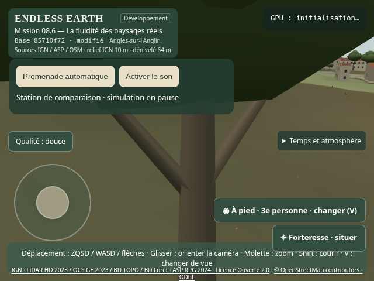
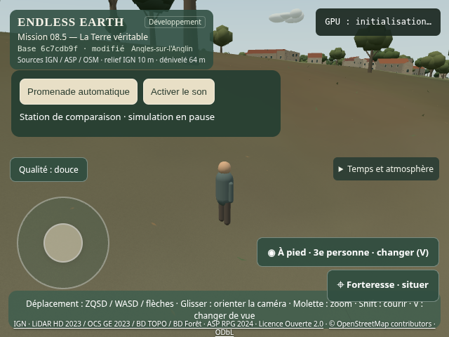
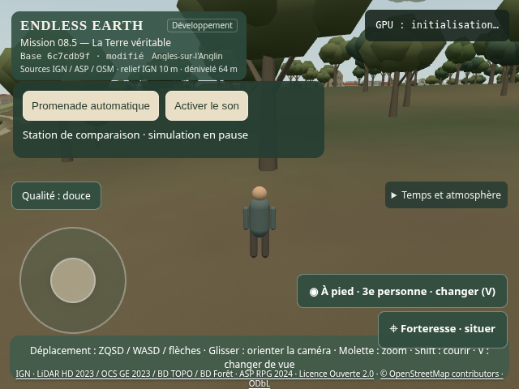
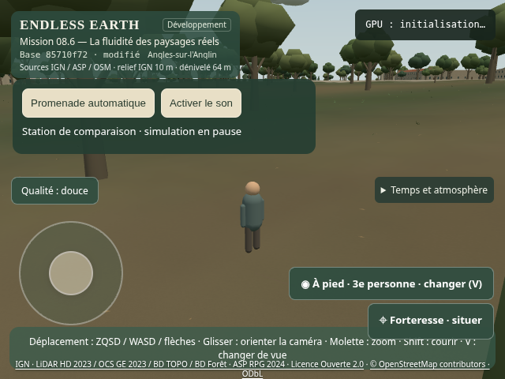
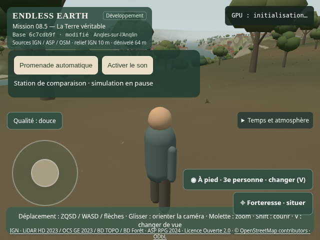
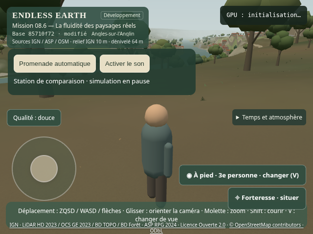
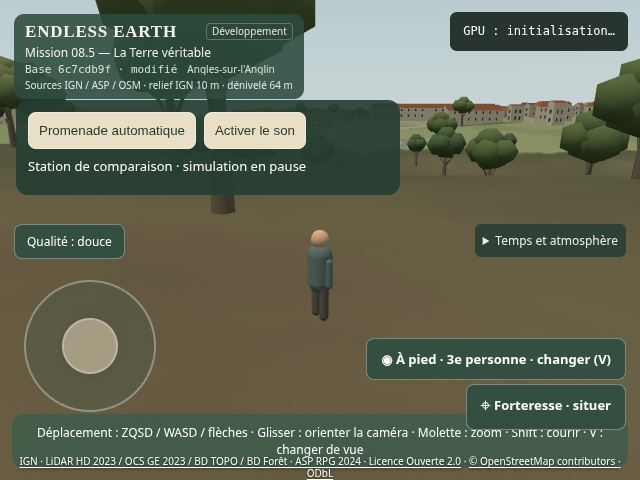
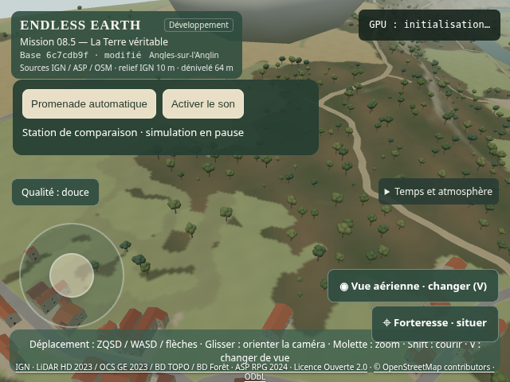
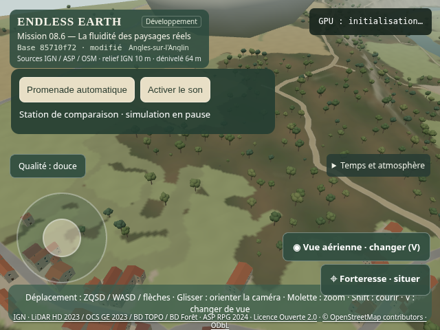
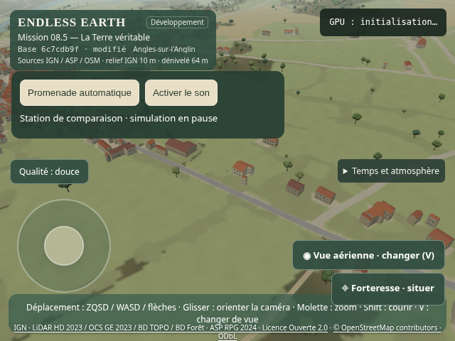
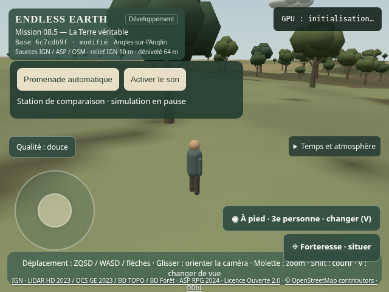
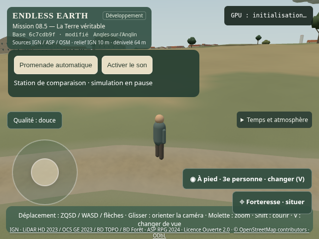
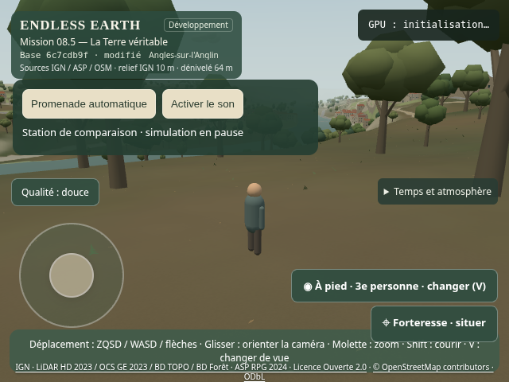


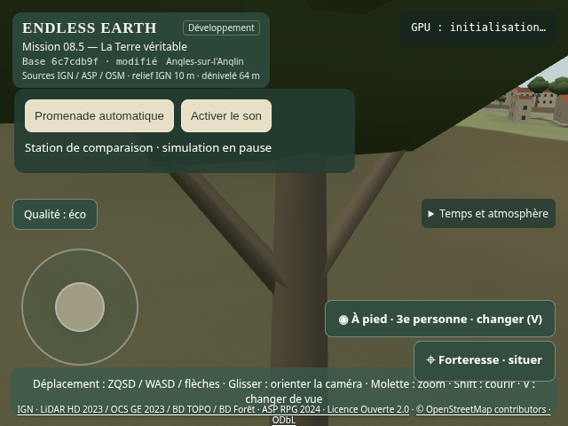
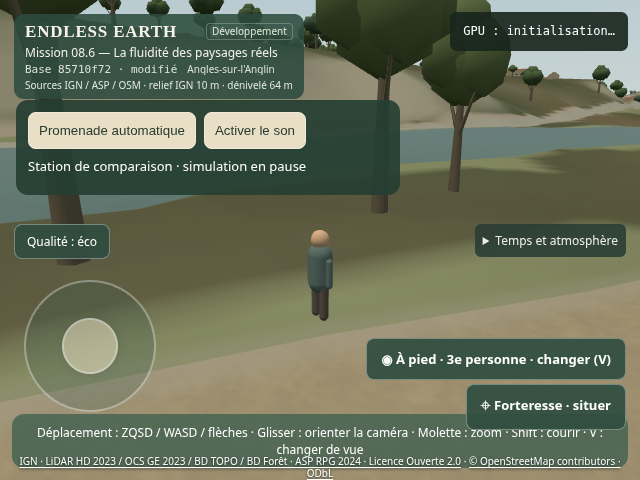
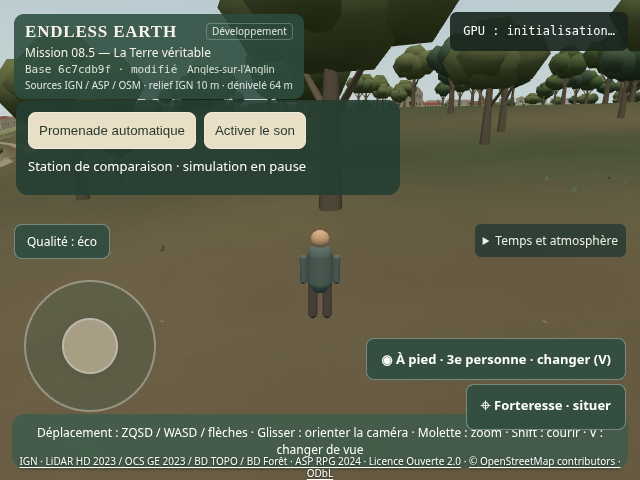
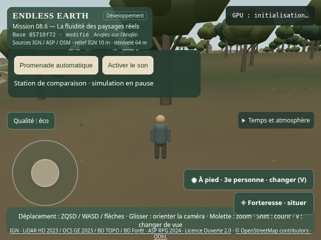
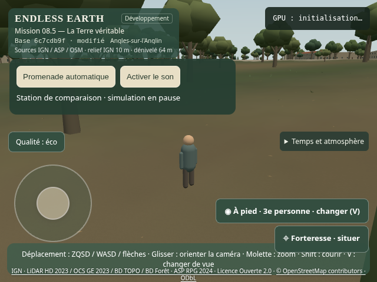
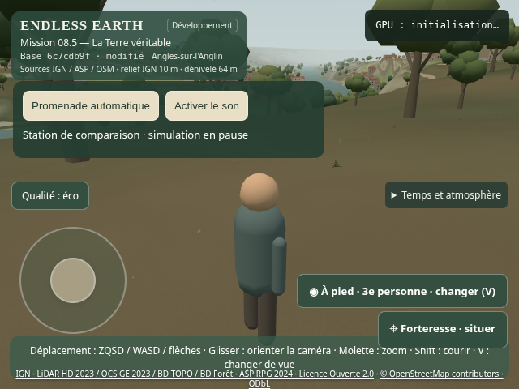
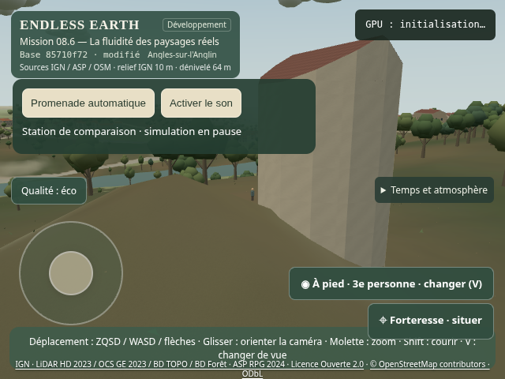


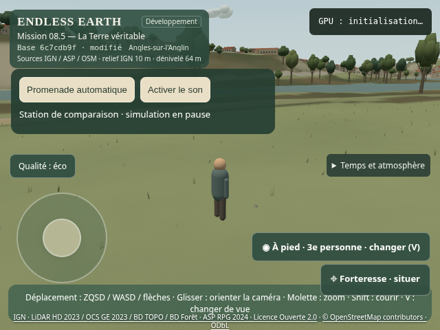
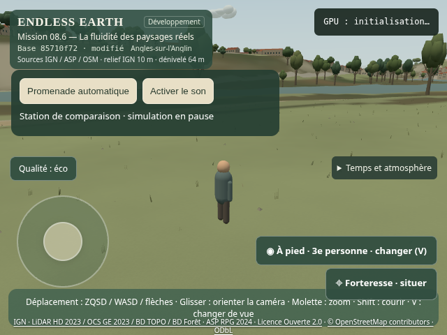
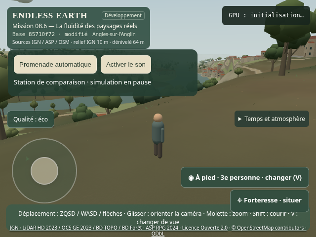
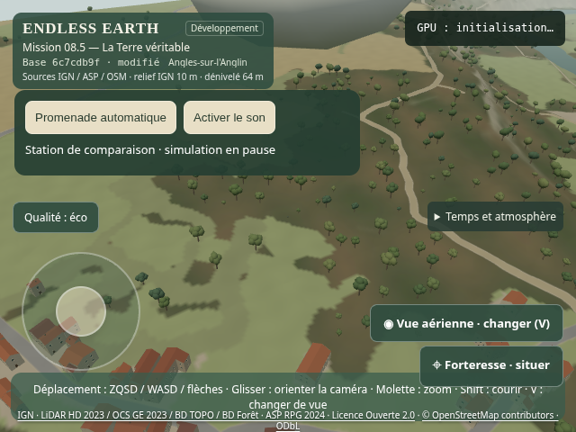
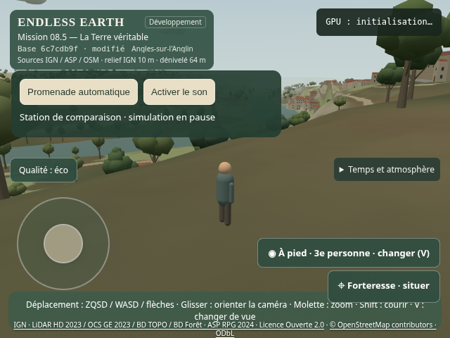